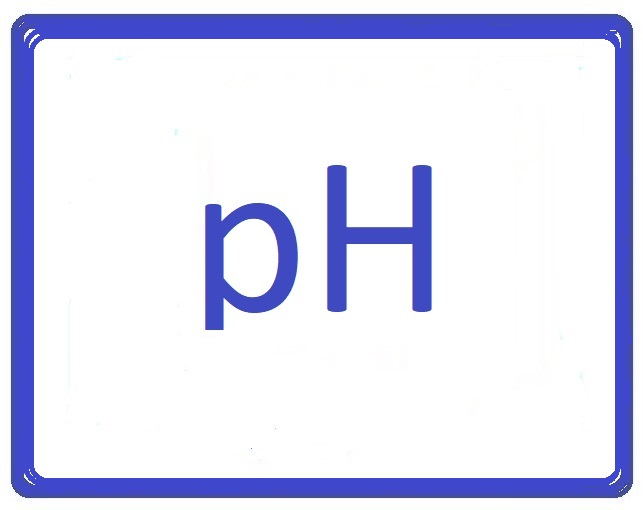

Aquarium Size 150L - 700L
Fish Length 12 - 20cm
Water Hardness 5 - 15
Water Acidity 6 - 7.5

Aquarium Size 150L - 700L
Fish Length 12 - 20cm
Water Hardness 5 - 15
Water Acidity 6 - 7.5
Lenght 10-12cm
Temperature 24ºC-28ºC
Aquarium fith flowers

Lenght 10-12cm
Temperature 24ºC-28ºC
Aquarium with flowers

Lenght 10-14cm
Temperature 22ºC-26ºC
Aquarium with rocks

Lenght 8-10cm
Temperature 24ºC-28ºC
aquarium with shelters

Lenght 6-10cm
Temperature 21ºC-27ºC
Aquarium fith flowers

Lenght 6-10cm
Temperature 21ºC-27ºC
Aquarium fith flowers

Lenght 2-3cm
Temperature 22ºC-28ºC
Aquarium fith flowers

Lenght 3-4cm
Temperature 22ºC-27ºC
Aquarium fith flowers

Lenght 8-10cm
Temperature 22ºC-26ºC
Aquarium fith flowers

Lenght 4-5cm
Temperature 23ºC-26ºC
Aquarium with flowers

Lenght 10-12cm
Temperature 22ºC-28ºC
aquarium with shelters

Lenght 11-13cm
Temperature 25ºC-28ºC
aquarium with shelters

Size: 250L+ | High aquarium | Special: extra plants
Temp: 24-28ºC | dGH 5 - 15 | kh 3 - 8 | ph 6,5 - 8
Sand | gravel small grains | gravel bigger grains
Aquarium 200l | Waterfilter | Heater 200W | Led light
Echinodorus, Cryptocoryne, Anubias
Scalare | Corydoras | Ancistrus

Size: 150L+ | Smaller fish | Special: extra plants
Temp: 24-28ºC | dGH 5 - 15 | kh 3 - 8 | ph 6,5 - 8
Sand | gravel small grains | gravel bigger grains
Aquarium 200l | Waterfilter | Heater 200W | Led light
Echinodorus | Anubias | Vallisneria | Egeria Densa
Xiphophorus | Poecilia reticulata | Corydoras | Ancistrus

Size: 450L+ | Hard water | Special: Space and Rocks
Temp: 24-28ºC | dGH 5 - 15 | kh 3 - 8 | ph 6,5 - 8
Sand only
Aquarium 450l | External filter | Heater 300W | Led light
Anubias and rocks
Geophagus | Corydoras | Ancistrus